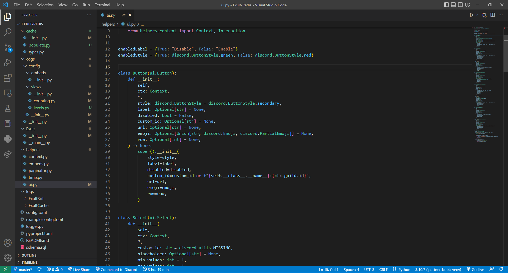
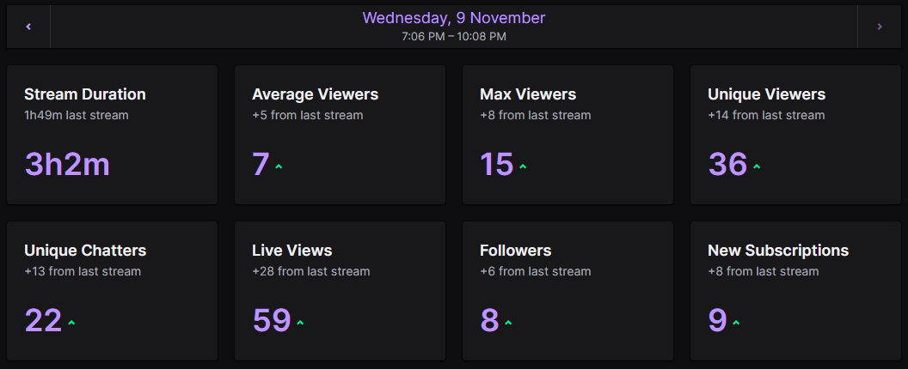
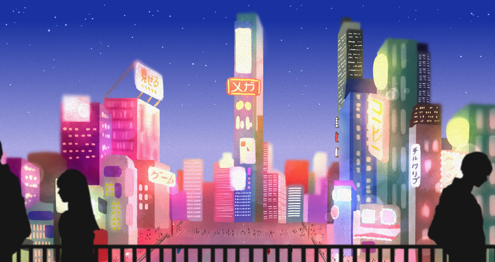

Development is (as of mid 2020-lockdown) a 2 year hobby of mine that I have been progressively improving in almost daily. Starting off with very basic python, moving up to more intermediate and advanced aspects of the language through developing discord bots. I used to take enjoyment from running communities on the platform, and having the ability to develop my own bots to do whatever I need them to do in order to help manage said communities was a huge help. The image below showcases a small snippet of what my development workspace looks like for discord bots, using Visual Studio Code. I later progressed onto basic-level web development, and have much more recently begun Java to begin exploring the minecraft-modding space.
Amongst many other individuals my age, becoming a content creator when I was older was a huge dream of mine, and still is to an extent, however my passion now lies within development and entrepreneurship. I still create content from time to time in the form of twitch streams, and have recently begun short-form content for platforms such as YouTube and TikTok.
I'm a 19 year old developer and aspiring entrepreneur. I am currently trying to grow and maintain my own software development company called Exult. It currently has a few projects including Discord Bots, Minecraft modding, Minecraft modpacks, a Minecraft network and hopefully much more to come in the future. I currently work remotely for BisectHosting as a Python Developer and I also help around with their Discord Community Management and Partner Program.
| Name | Points Received | Description | Evidence |
|---|---|---|---|
| Job (Remote Python Developer) | 10 | I am a remote python developer for an american games hosting company called BisectHosting. This is a contractor role that allows me to work as little or as many hours as I want providing there is work available to be completed. I average between 20 and 30 hours per week, and I am paid hourly for this role. | Direct image
link to an average working week's timesheet. Repository containing the code I write for this company can be shared upon request, this must remain closed-source due to previous attemps of stealing code without credit. |
| DevSoc Hacktoberfest | 5 | Hacktoberfest is a yearly programming event that encourages developers to contribute to OSS (Open-Source Software) for this event, I contributed a code foundations and structure rewrite, and as a side-note, I have prepared new and improved hosting options for their bot as well. | GitHub Repository link (DevSoc are yet to review my changes) |
| Digital Horizons Week | 6 | Digital Horizons Week held numerous events throughout the week for students to have a break from the work they are doing as part of their course, and get involved in special lectures and activities instead. To evidence attendance of these events/lectures we were required to take notes on the information given throughout the week. | Google document containing all notes made. |